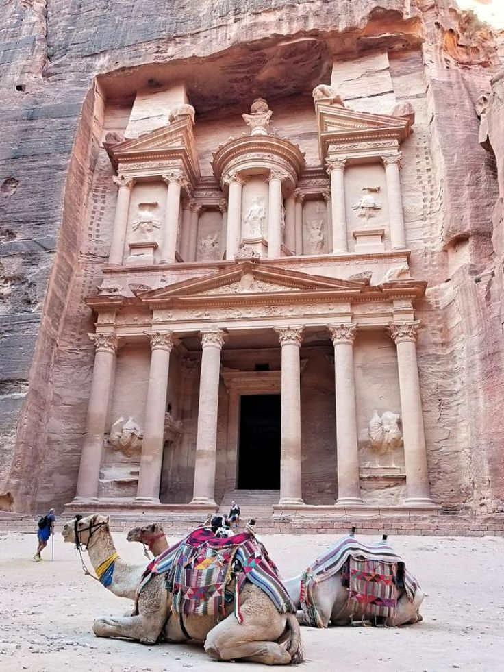

<html>
<head>
    <link rel="stylesheet" href="sle.css">
    <title>地理総合の夏季休暇課題</title>

</head>

</html>

<body>
    <h1>"ヨルダン"</h1>
    <h2>1.位置や分布</h2>
    <P>西アジアに位置し、シリア、イラク、サウジアラビア、イスラエル、パレスチナに囲まれている国です。</P>
    <p>人口は1128万人ほどでそのほとんどがアラブ人です。</p>
    <p>面積は北海道とほぼ同じ大きさです。</p>
     
    <h2>2.場所</h2>
    <p>日本と同じで四季があります。</p>
    <p>ただし、春と秋は短く冬が終わるといきなり気温が高くなり夏になります。</p>
    <p>国土の約8割が砂漠地帯で乾燥しています。</p>
    <p>民族衣装は「カンドーラ」「ディジタージュ」というものです。</p>
    
    <h2>3.人間と自然環境との相互依存関係</h2>
    <p>ヨルダンには世界遺産が6つあります。
    </p>
    <p>そのうちの一つが「ペトラ」という遺跡です。これは紀元前2世紀頃にナバテア王国の首都として建造されました。
    </p>
    
    <p>もう一つは「サント」という都市です。古来から貿易で栄えており、2021年に世界遺産に登録されました。</p>
    
    <h2>4.空間的相互依存作用</h2>
    <p>ヨルダンに暮らす人の15人に1人は難民です。そのためヨルダンは世界屈指の難民受け入れ大国といえます。特にパレスチナからの難民が多いです。</p>
    
    <p>第一次中東戦争勃発という背景がありパレスチナの難民が増えました。</p>
    <h2>5.地域</h2>
    <P>世界三位を誇るリン鉱石埋蔵量があり、ウランは世界の2パーセントの埋蔵量があります。</P>
    <p>現在はオイルシェールが注目されています。</p>
    <h2>6.SDGs</h2>
    <p>1「貧困をなくそう」</p>
    
    <p>ヨルダンは貧困が問題となっていて6人に1人が貧困であるとされています。</p>
    <p>失業率も高くなっています。</p>
    <p>貧困がなくならない理由は3つあり、それぞれ「食糧が届かない」「十分な教育を受けられない」「紛争や内戦に巻き込まれた」です。</p>
    <p>貧困をなくすための個人の取り組みとして支援団体に寄付をするなどがあります。ぜひ積極的にやりましょう。</p>
</body>